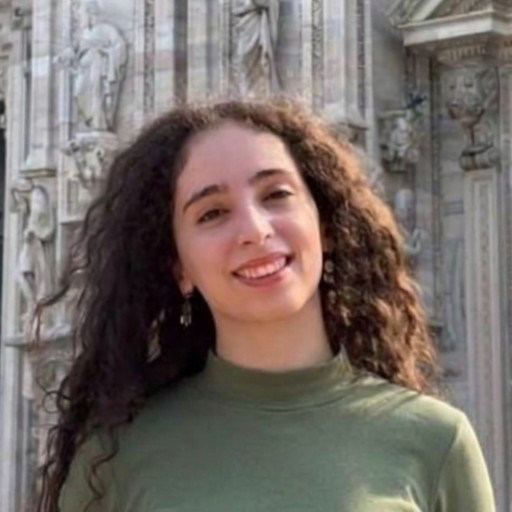
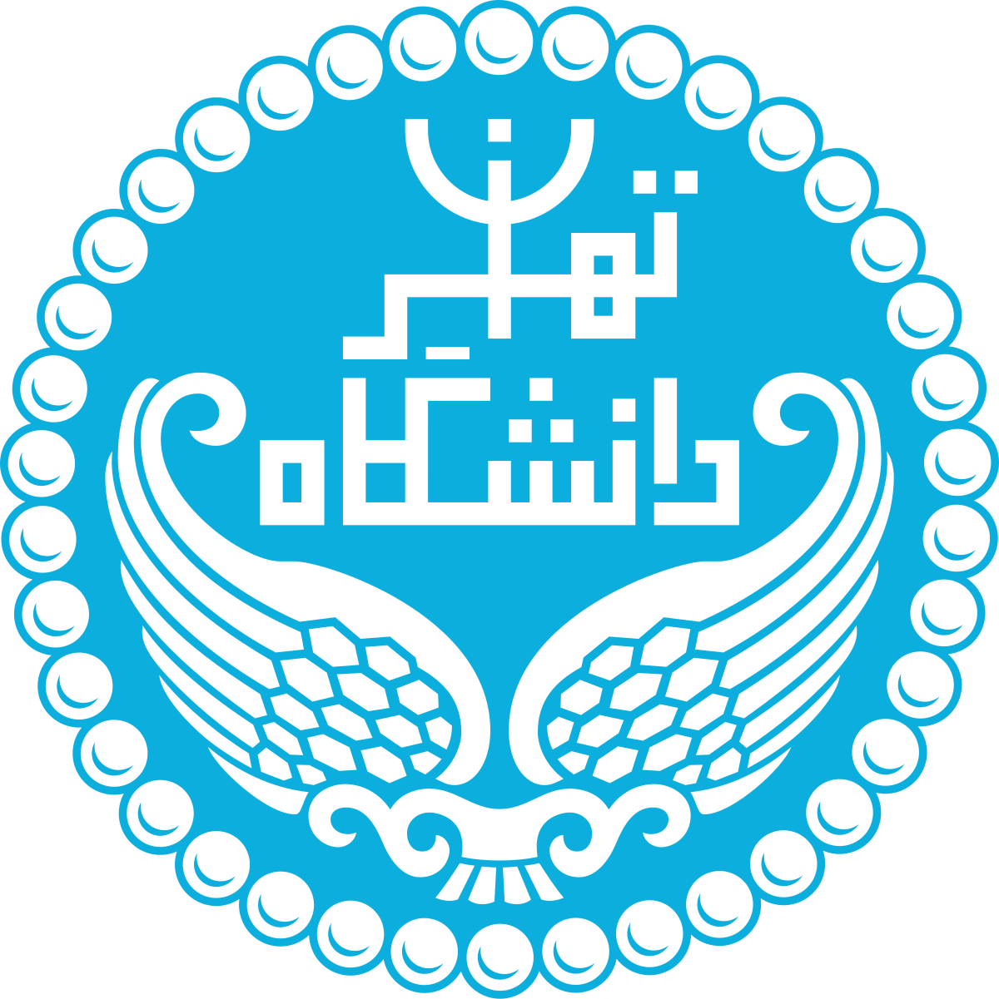
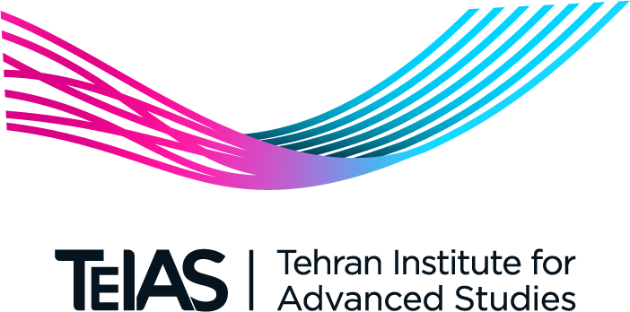

B.Sc. Student in Computer Engineering · University of Tehran
Final-year undergraduate Computer Engineering student at the University of Tehran (GPA: 19.1/20) interested in Programming Languages, Applied Formal Methods, Automata Theory, and Compiler Design.
Worked on exact monitorability and network runtime verification under the supervision of Prof. Nate Foster, reasoning about protocol properties over unreliable channels where packets may be reordered.

Research on control-flow integrity via compiler–RTL collaboration (accepted at DFTS 2026) and SAYAC embedded compiler design under Prof. Zainalabedin Navabi supervision. TA for Formal Languages & Automata Theory, Programming Languages & Compilers, Advanced Programming (Supervising TA), and Discrete Mathematics (Supervising TA).

Designed approximation algorithms for the Spanning Tree Congestion problem under the supervision of Prof. Sharareh Alipour, exploring related problems including Tree Spanners and minimum-cut algorithms.
Custom Mini-C compiler built from scratch for the SAYAC embedded processor, featuring a full backend with memory/register management and assembly generation.
Formal model and verification of Ethernet MAC address learning, frame forwarding, and ARP request/reply behavior, including an ARP spoofing scenario.
Reliable data transfer implementation using Stop-and-Wait, Sliding Window, packet loss recovery, and TCP-inspired congestion control mechanisms.
Object-oriented recreation of Plants vs. Zombies built with C++ and SFML.